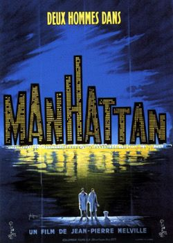

L a Nouvelle Vague fera surtout appel à des compositeurs français dont le jazz semble plus facile d'accès (Michel Legrand, Claude Bolling). On retrouve une musique davantage improvisée chez Alain Corneau, notamment dans "La Menace" (1978), musique de Gerry Mulligan et "Série Noire" (1979) où un thème de l'orchestre de Duke Ellington revient en leitmotiv et dans "Autour de minuit" (1986) de Bertrand Tavernier. Contrairement à la musique classique, le jazz c'est aussi la musique des loulous, des quartiers louches, comme le montre si bien le dessin animé "Les Aristochats" (1970), premier long métrage réalisé après la mort de Walt Disney, le scénario rappelle celui des "101 Dalmatiens" : des animaux domestiques volontairement égarés dans la nature qui veulent retrouver leur domicile. Les chansons signées des frères Sherman évoquent l'atmosphère parisienne de l'époque : le jazz pour le côté noir, la musique classique pour le côté blanc, symbole de la haute bourgeoisie. La jolie et raffinée Duchesse va s'encanailler avec Thomas O' Malley et la bande de Scat Cat. Une fois encore, la part belle est laissée au jazz, symbole de fête et de happy end. Le jazz illustre également la sensualité des femmes. De Betty Boop à "Qui veut la peau de Roger Rabbitt" (1988). Les chanteuses dégagent une séduction troublante.
"Symphonie Magique"(1943) - Bande-annonce originale

Miles Davis "Ascenseur pour l'échafaud"
Art Blakey's Jazz Messengers "No Problem"
- La série Les Blues Brothers – Sous la forme d’un fantastique road movie mêlant musique blues et comédie déjantée, cet incontournable du cinéma retrace les aventures de deux frères musiciens reprennant les plus grandes chansons du blues.
- Crossroads (1986) – Inspiré par la légende de Robert Johnson, ce film explore les thèmes de la quête identitaire et du mystère entourant certains grands noms de la musique blues.
- Black Snake Moan (2006) – Le blues sert ici de toile de fond à la rencontre improbable entre une jeune femme en quête de rédemption et un ancien musicien devenu fermier, avec une bande originale soignée signée Samuel L. Jackson.
- Le Blues de Ma Rainey (2020) - Un film poignant sur la « Mère du Blues » dans le Chicago des années 1920.
Autres titres de films et courts-métrages
- O'Brother (2000)
- Ray (2004)
- Honeydripper (2007)
- Cadillac Records (2009) -
- Who Do You Love (2009)
- America's Blues (2015) -
- Soul -

Laisser un commentaire
Les commentaires sont soumis à modération et doivent être approuvés avant publication.